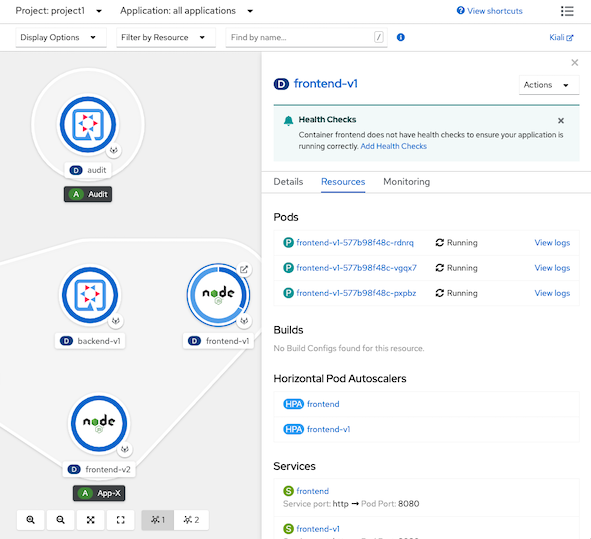
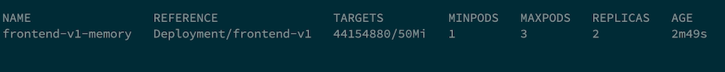
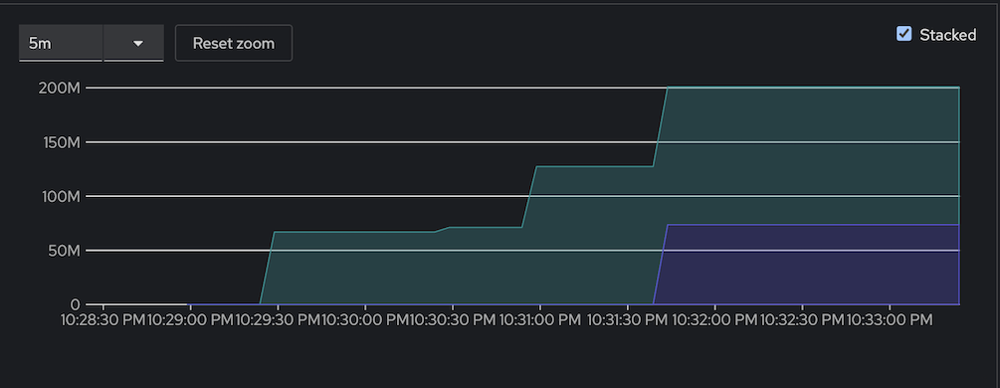

Horizontal Pod Autoscaler (HPA)
CPU
- Deploy frontend app (if you still not deploy it yet)
oc new-project project1 oc apply -f manifests/frontend.yaml -n project1 oc delete deployment frontend-v2 -n project1 FRONTEND_URL=https://$(oc get route frontend -n project1 -o jsonpath='{.spec.host}') curl -k $FRONTEND_URL Review CPU HPA for deployment frontend v1
- Scale out when average CPU utilization is greater than 80% of CPU limit
- Maximum pods is 3
Scale down to min replicas if utilization is lower than threshold for 60 sec
apiVersion: autoscaling/v2beta2 kind: HorizontalPodAutoscaler metadata: name: frontend-v1-cpu namespace: project1 spec: scaleTargetRef: apiVersion: apps/v1 kind: Deployment name: frontend-v1 minReplicas: 1 maxReplicas: 3 metrics: - type: Resource resource: name: cpu target: averageUtilization: 80 type: Utilization behavior: scaleDown: stabilizationWindowSeconds: 60 policies: - type: Percent value: 100 periodSeconds: 15
oc create -f manifests/frontend-v1-cpu-hpa.yaml -n project1
Check HPA status
watch oc get horizontalpodautoscaler/frontend-v1-cpu -n project1Generate load with load test tool (siege)
FRONTEND_URL=https://$(oc get route frontend -n project1 -o jsonpath='{.spec.host}') siege -c 40 $FRONTEND_URL
If you don't have siege, run k6 as pod on OpenShift
- 40 threads
- Duration 3 minutes
- Ramp up 30 sec
- Ramp down 30 sec
FRONTEND_URL=https://$(oc get route frontend -n project1 -o jsonpath='{.spec.host}')
oc run load-test -n project1 -i \
--image=loadimpact/k6 --rm=true --restart=Never \
-- run - < manifests/load-test-k6.js \
-e URL=$FRONTEND_URL -e THREADS=40 -e DURATION=3m -e RAMPUP=30s -e RAMPDOWN=30s
Remark: k6 will run as pod name load-test for 4 minutes if you want to force stop before 4 minutes just delete load-test pod
oc delete pod load-test -n project1
Wait for HPA to trigger

Check Developer Console

Stop load test and wait 1 minutes to scale down to 1 replica.
Memory
- Review Memory HPA for deployment frontend v1
- Scale out when average memory utilization is greater than 60M of memory limit
- Maximum pods is 3
- Scale down to min replicas if utilization is lower than threshold for 60 sec
apiVersion: autoscaling/v2beta2 kind: HorizontalPodAutoscaler metadata: name: frontend-v1-memory spec: scaleTargetRef: apiVersion: apps/v1 kind: Deployment name: frontend-v1 minReplicas: 1 maxReplicas: 3 metrics: - type: Resource resource: name: memory target: type: Utilization averageValue: 50Mi behavior: scaleDown: stabilizationWindowSeconds: 60 policies: - type: Percent value: 100 periodSeconds: 15
- Create Memory HPA for deployment frontend v1
oc delete -f manifests/frontend-v1-cpu-hpa.yaml -n project1 oc create -f manifests/frontend-v1-memory-hpa.yaml -n project1 - Check HPA status
watch oc get horizontalpodautoscaler/frontend-v1-memory -n project1 - Generate load with load test tool (siege)
FRONTEND_URL=https://$(oc get route frontend -n project1 -jsonpath='{.spec.host}') siege -c 40 $FRONTEND_URL Wait for HPA to trigger

Check memory utilization from Developer console

Stop load test and wait 1 minutes to scale down to 1 replica.
Custom Metrics
WIP